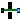
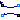
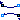

| Name | Description |
|---|---|
| User's Guide | |
| DoorDiscretizedOpen | Door model using discretization along height coordinate |
| DoorDiscretizedOperable | Door model using discretization along height coordinate |
| EffectiveAirLeakageArea | Effective air leakage area |
| MediumColumn | Vertical shaft with no friction and no storage of heat and mass |
| MediumColumnDynamic | Vertical shaft with no friction and storage of heat and mass |
|  Orifice | Orifice |
|  ZonalFlow_ACS | Zonal flow with input air change per second |
|  ZonalFlow_m_flow | Zonal flow with input air change per second |
| Collection of models that illustrate model use and test models | |
| Package with base classes for Buildings.Airflow.Multizone | |
| Package with type definitions |

This model describes the bi-directional air flow through an open door.
To compute the bi-directional flow, the door is discretize along the height coordinate. An orifice equation is used to compute the flow for each compartment.
In this model, the door is always open. Use the model Buildings.Airflow.Multizone.DoorDiscretizedOperable for a door that can either be open or closed.
Extends from Buildings.Airflow.Multizone.BaseClasses.DoorDiscretized (Door model using discretization along height coordinate).
| Type | Name | Default | Description |
|---|---|---|---|
| Boolean | forceErrorControlOnFlow | true | Flag to force error control on m_flow. Set to true if interested in flow rate |
| replaceable package Medium | PartialMedium | ||
| Velocity | vZer | 0.001 | Minimum velocity to prevent zero flow. Recommended: 0.001 [m/s] |
| Integer | nCom | 10 | Number of compartments for the discretization |
| Pressure | dp_turbulent | 0.01 | Pressure difference where laminar and turbulent flow relation coincide. Recommended: 0.01 [Pa] |
| Initialization | |||
| MassFlowRate | m1_flow.start | 0 | Mass flow rate from port_a1 to port_b1 (m1_flow > 0 is design flow direction) [kg/s] |
| Pressure | dp1.start | 0 | Pressure difference between port_a1 and port_b1 [Pa] |
| MassFlowRate | m2_flow.start | 0 | Mass flow rate from port_a2 to port_b2 (m2_flow > 0 is design flow direction) [kg/s] |
| Pressure | dp2.start | 0 | Pressure difference between port_a2 and port_b2 [Pa] |
| Density | rho_a1_inflow.start | 1.2 | Density of air flowing in from port_a1 [kg/m3] |
| Density | rho_a2_inflow.start | 1.2 | Density of air flowing in from port_a2 [kg/m3] |
| Geometry | |||
| Length | wOpe | 0.9 | Width of opening [m] |
| Length | hOpe | 2.1 | Height of opening [m] |
| Length | hA | 2.7/2 | Height of reference pressure zone A [m] |
| Length | hB | 2.7/2 | Height of reference pressure zone B [m] |
| Orifice characteristics | |||
| Real | CD | 0.65 | Discharge coefficient |
| Advanced | |||
| Initialization | |||
| SpecificEnthalpy | h_outflow_a1_start | Medium1.h_default | Start value for enthalpy flowing out of port a1 [J/kg] |
| SpecificEnthalpy | h_outflow_b1_start | Medium1.h_default | Start value for enthalpy flowing out of port b1 [J/kg] |
| SpecificEnthalpy | h_outflow_a2_start | Medium2.h_default | Start value for enthalpy flowing out of port a2 [J/kg] |
| SpecificEnthalpy | h_outflow_b2_start | Medium2.h_default | Start value for enthalpy flowing out of port b2 [J/kg] |
| MassFlowRate | m1_flow_small | 1E-4*abs(m1_flow_nominal) | Small mass flow rate for regularization of zero flow [kg/s] |
| MassFlowRate | m2_flow_small | 1E-4*abs(m2_flow_nominal) | Small mass flow rate for regularization of zero flow [kg/s] |
| Boolean | homotopyInitialization | true | = true, use homotopy method |
| Diagnostics | |||
| Boolean | show_T | false | = true, if actual temperature at port is computed |
| Type | Name | Description |
|---|---|---|
| FluidPort_a | port_a1 | Fluid connector a1 (positive design flow direction is from port_a1 to port_b1) |
| FluidPort_b | port_b1 | Fluid connector b1 (positive design flow direction is from port_a1 to port_b1) |
| FluidPort_a | port_a2 | Fluid connector a2 (positive design flow direction is from port_a2 to port_b2) |
| FluidPort_b | port_b2 | Fluid connector b2 (positive design flow direction is from port_a2 to port_b2) |
model DoorDiscretizedOpen
"Door model using discretization along height coordinate"
extends Buildings.Airflow.Multizone.BaseClasses.DoorDiscretized;
protected
constant Real mFixed = 0.5 "Fixed value for flow coefficient";
constant Real gamma(min=1) = 1.5
"Normalized flow rate where dphi(0)/dpi intersects phi(1)";
constant Real a = gamma
"Polynomial coefficient for regularized implementation of flow resistance";
constant Real b = 1/8*mFixed^2 - 3*gamma - 3/2*mFixed + 35.0/8
"Polynomial coefficient for regularized implementation of flow resistance";
constant Real c = -1/4*mFixed^2 + 3*gamma + 5/2*mFixed - 21.0/4
"Polynomial coefficient for regularized implementation of flow resistance";
constant Real d = 1/8*mFixed^2 - gamma - mFixed + 15.0/8
"Polynomial coefficient for regularized implementation of flow resistance";
equation
m=mFixed;
A = wOpe*hOpe;
kVal = CD*dA*sqrt(2/rho_default);
// orifice equation
for i in 1:nCom loop
dV_flow[i] = Buildings.Airflow.Multizone.BaseClasses.powerLawFixedM(
k=kVal,
dp=dpAB[i],
m=mFixed,
a=a,
b=b,
c=c,
d=d,
dp_turbulent=dp_turbulent);
end for;
end DoorDiscretizedOpen;
This model describes the bi-directional air flow through an open door.
To compute the bi-directional flow, the door is discretize along the height coordinate, and uses an orifice equation to compute the flow for each compartment.
The door can be either open or closed, depending on the input signal y. Set y=0 if the door is closed, and y=1 if the door is open. Use the model Buildings.Airflow.Multizone.Crack for a door that is always closed.
Extends from Buildings.Airflow.Multizone.BaseClasses.DoorDiscretized (Door model using discretization along height coordinate).
| Type | Name | Default | Description |
|---|---|---|---|
| Boolean | forceErrorControlOnFlow | true | Flag to force error control on m_flow. Set to true if interested in flow rate |
| replaceable package Medium | PartialMedium | ||
| Velocity | vZer | 0.001 | Minimum velocity to prevent zero flow. Recommended: 0.001 [m/s] |
| Integer | nCom | 10 | Number of compartments for the discretization |
| Pressure | dp_turbulent | 0.01 | Pressure difference where laminar and turbulent flow relation coincide. Recommended: 0.01 [Pa] |
| Initialization | |||
| MassFlowRate | m1_flow.start | 0 | Mass flow rate from port_a1 to port_b1 (m1_flow > 0 is design flow direction) [kg/s] |
| Pressure | dp1.start | 0 | Pressure difference between port_a1 and port_b1 [Pa] |
| MassFlowRate | m2_flow.start | 0 | Mass flow rate from port_a2 to port_b2 (m2_flow > 0 is design flow direction) [kg/s] |
| Pressure | dp2.start | 0 | Pressure difference between port_a2 and port_b2 [Pa] |
| Density | rho_a1_inflow.start | 1.2 | Density of air flowing in from port_a1 [kg/m3] |
| Density | rho_a2_inflow.start | 1.2 | Density of air flowing in from port_a2 [kg/m3] |
| Geometry | |||
| Length | wOpe | 0.9 | Width of opening [m] |
| Length | hOpe | 2.1 | Height of opening [m] |
| Length | hA | 2.7/2 | Height of reference pressure zone A [m] |
| Length | hB | 2.7/2 | Height of reference pressure zone B [m] |
| Orifice characteristics | |||
| Real | CD | 0.65 | Discharge coefficient |
| Closed aperture rating conditions | |||
| Pressure | dpCloRat | 4 | Pressure drop at rating condition [Pa] |
| Real | CDCloRat | 1 | Discharge coefficient |
| Closed aperture | |||
| Area | LClo | Effective leakage area [m2] | |
| Real | CDClo | 0.65 | Discharge coefficient |
| Real | mClo | 0.65 | Flow exponent for crack |
| Open aperture | |||
| Real | CDOpe | 0.65 | Discharge coefficient |
| Real | mOpe | 0.5 | Flow exponent for door |
| Advanced | |||
| Initialization | |||
| SpecificEnthalpy | h_outflow_a1_start | Medium1.h_default | Start value for enthalpy flowing out of port a1 [J/kg] |
| SpecificEnthalpy | h_outflow_b1_start | Medium1.h_default | Start value for enthalpy flowing out of port b1 [J/kg] |
| SpecificEnthalpy | h_outflow_a2_start | Medium2.h_default | Start value for enthalpy flowing out of port a2 [J/kg] |
| SpecificEnthalpy | h_outflow_b2_start | Medium2.h_default | Start value for enthalpy flowing out of port b2 [J/kg] |
| MassFlowRate | m1_flow_small | 1E-4*abs(m1_flow_nominal) | Small mass flow rate for regularization of zero flow [kg/s] |
| MassFlowRate | m2_flow_small | 1E-4*abs(m2_flow_nominal) | Small mass flow rate for regularization of zero flow [kg/s] |
| Boolean | homotopyInitialization | true | = true, use homotopy method |
| Diagnostics | |||
| Boolean | show_T | false | = true, if actual temperature at port is computed |
| Type | Name | Description |
|---|---|---|
| FluidPort_a | port_a1 | Fluid connector a1 (positive design flow direction is from port_a1 to port_b1) |
| FluidPort_b | port_b1 | Fluid connector b1 (positive design flow direction is from port_a1 to port_b1) |
| FluidPort_a | port_a2 | Fluid connector a2 (positive design flow direction is from port_a2 to port_b2) |
| FluidPort_b | port_b2 | Fluid connector b2 (positive design flow direction is from port_a2 to port_b2) |
| input RealInput | y | Opening signal, 0=closed, 1=open |
model DoorDiscretizedOperable
"Door model using discretization along height coordinate"
extends Buildings.Airflow.Multizone.BaseClasses.DoorDiscretized;
parameter Modelica.SIunits.Pressure dpCloRat(min=0)=4
"|Closed aperture rating conditions|Pressure drop at rating condition";
parameter Real CDCloRat(min=0, max=1)=1
"|Closed aperture rating conditions|Discharge coefficient";
parameter Modelica.SIunits.Area LClo(min=0)
"|Closed aperture|Effective leakage area";
parameter Real CDOpe=0.65 "|Open aperture|Discharge coefficient";
parameter Real CDClo=0.65 "|Closed aperture|Discharge coefficient";
parameter Real mOpe = 0.5 "|Open aperture|Flow exponent for door";
parameter Real mClo= 0.65 "|Closed aperture|Flow exponent for crack";
Modelica.Blocks.Interfaces.RealInput y "Opening signal, 0=closed, 1=open";
protected
parameter Modelica.SIunits.Area AOpe=wOpe*hOpe "Open aperture area";
parameter Modelica.SIunits.Area AClo(fixed=false) "Closed aperture area";
Real kOpe "Open aperture flow coefficient, k = V_flow/ dp^m";
Real kClo "Closed aperture flow coefficient, k = V_flow/ dp^m";
Real fraOpe "Fraction of aperture that is open";
initial equation
AClo=CDClo/CDCloRat * LClo * dpCloRat^(0.5-mClo);
equation
assert(y >= 0, "Input error. Opening signal must be between 0 and 1.\n"
+ " Received y.signal[1] = " + String(y));
assert(y <= 1, "Input error. Opening signal must be between 0 and 1.\n"
+ " Received y.signal[1] = " + String(y));
fraOpe =y;
kClo = CDClo * AClo/nCom * sqrt(2/rho_default);
kOpe = CDOpe * AOpe/nCom * sqrt(2/rho_default);
// flow exponent
m = fraOpe*mOpe + (1-fraOpe)*mClo;
// opening area
A = fraOpe*AOpe + (1-fraOpe)*AClo;
// friction coefficient for power law
kVal = fraOpe*kOpe + (1-fraOpe)*kClo;
// orifice equation
for i in 1:nCom loop
dV_flow[i] = Buildings.Airflow.Multizone.BaseClasses.powerLaw(
k=kVal,
dp=dpAB[i],
m=m,
dp_turbulent=dp_turbulent);
end for;
end DoorDiscretizedOperable;

This model describes the one-directional pressure driven air flow through a crack-like opening.
The opening is modeled as an orifice. The orifice area is parameterized by processing the effective air leakage area, the discharge coefficient and pressure drop at a reference condition. The effective air leakage area can be obtained, for example, from the ASHRAE fundamentals (ASHRAE, 1997, p. 25.18). In the ASHRAE fundamentals, the effective air leakage area is based on a reference pressure difference of 4 Pa and a discharge coefficient of 1. A similar model is also used in the CONTAM software (Dols and Walton, 2002). Dols and Walton (2002) recommend to use for the flow exponent m=0.6 to m=0.7 if the flow exponent is not reported with the test results.
| Type | Name | Default | Description |
|---|---|---|---|
| replaceable package Medium | PartialMedium | Medium in the component | |
| Boolean | forceErrorControlOnFlow | true | Flag to force error control on m_flow. Set to true if interested in flow rate |
| Real | m | 0.65 | Flow exponent, m=0.5 for turbulent, m=1 for laminar |
| Boolean | useDefaultProperties | true | Set to false to use density and viscosity based on actual medium state, rather than using default values |
| Pressure | dp_turbulent | 0.1 | Pressure difference where laminar and turbulent flow relation coincide. Recommended = 0.1 [Pa] |
| Length | lWet | sqrt(A) | Wetted perimeter used for Reynolds number calculation [m] |
| Area | L | Effective leakage area [m2] | |
| Initialization | |||
| MassFlowRate | m_flow.start | 0 | Mass flow rate from port_a to port_b (m_flow > 0 is design flow direction) [kg/s] |
| Pressure | dp.start | 0 | Pressure difference between port_a and port_b [Pa] |
| Orifice characteristics | |||
| Area | A | CD/CDRat*L*dpRat^(0.5 - m) | Area of orifice [m2] |
| Real | CD | 0.65 | Discharge coefficient |
| Rating conditions | |||
| Pressure | dpRat | 4 | Pressure drop at rating condition [Pa] |
| Real | CDRat | 1 | Discharge coefficient |
| Assumptions | |||
| Boolean | allowFlowReversal | system.allowFlowReversal | = true to allow flow reversal, false restricts to design direction (port_a -> port_b) |
| Advanced | |||
| MassFlowRate | m_flow_small | 1E-4*abs(m_flow_nominal) | Small mass flow rate for regularization of zero flow [kg/s] |
| Boolean | homotopyInitialization | true | = true, use homotopy method |
| Diagnostics | |||
| Boolean | show_T | false | = true, if actual temperature at port is computed |
| Type | Name | Description |
|---|---|---|
| FluidPort_a | port_a | Fluid connector a (positive design flow direction is from port_a to port_b) |
| FluidPort_b | port_b | Fluid connector b (positive design flow direction is from port_a to port_b) |
model EffectiveAirLeakageArea "Effective air leakage area"
extends Buildings.Airflow.Multizone.Orifice(
m=0.65,
final A=CD/CDRat * L * dpRat^(0.5-m));
parameter Modelica.SIunits.Pressure dpRat(min=0)=4
"|Rating conditions|Pressure drop at rating condition";
parameter Real CDRat(min=0, max=1)=1
"|Rating conditions|Discharge coefficient";
parameter Modelica.SIunits.Area L(min=0) "Effective leakage area";
end EffectiveAirLeakageArea;
This model describes the pressure difference of a vertical medium column. It can be used to model the pressure difference caused by stack effect.
The model can be used with the following three configurations, which are
controlled by the setting of the parameter densitySelection:
top:
Use this setting to use the density from the volume that is connected
to port_a.
bottom:
Use this setting to use the density from the volume that is connected
to port_b.
actual:
Use this setting to use the density based on the actual flow direction.
The settings top and bottom
should be used when rooms or different floors of a building are
connected since multizone airflow models assume that each floor is completely mixed.
For these two seetings, this model will compute the pressure between the center of the room
and an opening that is at height h relative to the center of the room.
The setting actual may be used to model a chimney in which
a column of air will change its density based on the flow direction.
In this model, the parameter h must always be positive, and the port port_a must be
at the top of the column.
For a steady-state model, use Buildings.Airflow.Multizone.MediumColumnDynamic instead of this model.
| Type | Name | Default | Description |
|---|---|---|---|
| replaceable package Medium | Modelica.Media.Interfaces.Pa... | Medium in the component | |
| Length | h | 3 | Height of shaft [m] |
| densitySelection | densitySelection | Select how to pick density | |
| Assumptions | |||
| Boolean | allowFlowReversal | system.allowFlowReversal | = true to allow flow reversal, false restricts to design direction (port_a -> port_b) |
| Type | Name | Description |
|---|---|---|
| replaceable package Medium | Medium in the component | |
| FluidPort_a | port_a | Fluid connector a (positive design flow direction is from port_a to port_b) |
| FluidPort_b | port_b | Fluid connector b (positive design flow direction is from port_a to port_b) |
model MediumColumn
"Vertical shaft with no friction and no storage of heat and mass"
import Modelica.Constants;
outer Modelica.Fluid.System system "System wide properties";
replaceable package Medium = Modelica.Media.Interfaces.PartialMedium
"Medium in the component";
parameter Modelica.SIunits.Length h(min=0) = 3 "Height of shaft";
parameter Buildings.Airflow.Multizone.Types.densitySelection densitySelection
"Select how to pick density";
parameter Boolean allowFlowReversal=system.allowFlowReversal
"= true to allow flow reversal, false restricts to design direction (port_a -> port_b)";
Modelica.Fluid.Interfaces.FluidPort_a port_a(
redeclare package Medium = Medium,
m_flow(min=if allowFlowReversal then -Constants.inf else 0),
p(start=Medium.p_default, nominal=Medium.p_default))
"Fluid connector a (positive design flow direction is from port_a to port_b)";
Modelica.Fluid.Interfaces.FluidPort_b port_b(
redeclare package Medium = Medium,
m_flow(max=if allowFlowReversal then +Constants.inf else 0),
p(start=Medium.p_default, nominal=Medium.p_default))
"Fluid connector b (positive design flow direction is from port_a to port_b)";
Modelica.SIunits.VolumeFlowRate V_flow=m_flow/Medium.density(sta_a)
"Volume flow rate at inflowing port (positive when flow from port_a to port_b)";
Modelica.SIunits.MassFlowRate m_flow(start=0)
"Mass flow rate from port_a to port_b (m_flow > 0 is design flow direction)";
Modelica.SIunits.Pressure dp(start=0, displayUnit="Pa")
"Pressure difference between port_a and port_b";
Modelica.SIunits.Density rho "Density in medium column";
protected
Medium.ThermodynamicState sta_a=Medium.setState_phX(
port_a.p,
actualStream(port_a.h_outflow),
actualStream(port_a.Xi_outflow)) "Medium properties in port_a";
initial equation
assert(abs(Medium.density(Medium.setState_pTX(
Medium.p_default,
Medium.T_default,
Medium.X_default)) - Medium.density(Medium.setState_pTX(
Medium.p_default,
Medium.T_default + 5,
Medium.X_default))) > 1E-10,
"Error: The density of the medium that is used to compute buoyancy force is independent of temperature."
+ "\n You need to select a different medium model.");
// The next assert tests for all allowed values of the enumeration.
// Testing against densitySelection > 0 gives an error in OpenModelica as enumerations start with 1.
assert(densitySelection == Buildings.Airflow.Multizone.Types.densitySelection.fromTop
or
densitySelection == Buildings.Airflow.Multizone.Types.densitySelection.fromBottom
or
densitySelection == Buildings.Airflow.Multizone.Types.densitySelection.actual,
"You need to set the parameter \"densitySelection\" for the model MediumColumn.");
equation
// Design direction of mass flow rate
m_flow = port_a.m_flow;
// Pressure difference between ports
rho = if (densitySelection == Buildings.Airflow.Multizone.Types.densitySelection.fromTop) then
Medium.density(Medium.setState_phX(
port_a.p,
inStream(port_a.h_outflow),
inStream(port_a.Xi_outflow))) else if (densitySelection == Buildings.Airflow.Multizone.Types.densitySelection.fromBottom) then
Medium.density(Medium.setState_phX(
port_b.p,
inStream(port_b.h_outflow),
inStream(port_b.Xi_outflow))) else Medium.density(Medium.setState_phX(
port_a.p,
actualStream(port_a.h_outflow),
actualStream(port_a.Xi_outflow)));
dp = port_a.p - port_b.p;
dp = -h*rho*Modelica.Constants.g_n;
// Isenthalpic state transformation (no storage and no loss of energy)
port_a.h_outflow = inStream(port_b.h_outflow);
port_b.h_outflow = inStream(port_a.h_outflow);
// Mass balance (no storage)
port_a.m_flow + port_b.m_flow = 0;
// Transport of substances
port_a.Xi_outflow = inStream(port_b.Xi_outflow);
port_b.Xi_outflow = inStream(port_a.Xi_outflow);
port_a.C_outflow = inStream(port_b.C_outflow);
port_b.C_outflow = inStream(port_a.C_outflow);
end MediumColumn;
This model contains a completely mixed fluid volume and models that take into account the pressure difference of a medium column that is at the same temperature as the fluid volume. It can be used to model the pressure difference caused by a stack effect.
Set the parameter use_HeatTransfer=true to expose
a heatPort. This heatPort can be used
to add or subtract heat from the volume. This allows, for example,
to use this model in conjunction with a model for heat transfer through
walls to model a solar chimney that stores heat.
For a steady-state model, use Buildings.Airflow.Multizone.MediumColumn instead of this model.
In this model, the parameter h must always be positive, and the port port_a must be
at the top of the column.
| Type | Name | Default | Description |
|---|---|---|---|
| replaceable package Medium | PartialMedium | Medium in the component | |
| Length | h | 3 | Height of shaft [m] |
| Volume | V | Volume in medium shaft [m3] | |
| Nominal condition, used only for steady-state model | |||
| MassFlowRate | m_flow_nominal | Nominal mass flow rate [kg/s] | |
| Dynamics | |||
| Equations | |||
| Dynamics | energyDynamics | Modelica.Fluid.Types.Dynamic... | Formulation of energy balance |
| Dynamics | massDynamics | energyDynamics | Formulation of mass balance |
| Initialization | |||
| AbsolutePressure | p_start | Medium.p_default | Start value of pressure [Pa] |
| Temperature | T_start | Medium.T_default | Start value of temperature [K] |
| MassFraction | X_start[Medium.nX] | Medium.X_default | Start value of mass fractions m_i/m [kg/kg] |
| ExtraProperty | C_start[Medium.nC] | fill(0, Medium.nC) | Start value of trace substances |
| ExtraProperty | C_nominal[Medium.nC] | fill(1E-2, Medium.nC) | Nominal value of trace substances. (Set to typical order of magnitude.) |
| Assumptions | |||
| Boolean | allowFlowReversal | true | = true to allow flow reversal, false restricts to design direction (port_a -> port_b) |
| Heat transfer | |||
| Boolean | use_HeatTransfer | false | = true to use the HeatTransfer model |
| replaceable model HeatTransfer | Modelica.Fluid.Vessels.BaseC... | Wall heat transfer | |
| Type | Name | Description |
|---|---|---|
| replaceable package Medium | Medium in the component | |
| FluidPort_a | port_a | Fluid connector a (positive design flow direction is from port_a to port_b) |
| FluidPort_b | port_b | Fluid connector b (positive design flow direction is from port_a to port_b) |
| HeatPort_a | heatPort | Heat port to exchange energy with the fluid volume |
| Assumptions | ||
| Heat transfer | ||
| replaceable model HeatTransfer | Wall heat transfer | |
model MediumColumnDynamic
"Vertical shaft with no friction and storage of heat and mass"
extends Buildings.Fluid.Interfaces.LumpedVolumeDeclarations;
import Modelica.Constants;
replaceable package Medium = Modelica.Media.Interfaces.PartialMedium
"Medium in the component";
parameter Modelica.SIunits.Length h(min=0) = 3 "Height of shaft";
parameter Boolean allowFlowReversal=true
"= true to allow flow reversal, false restricts to design direction (port_a -> port_b)";
parameter Modelica.SIunits.MassFlowRate m_flow_nominal(min=0)
"Nominal mass flow rate";
Modelica.Fluid.Interfaces.FluidPort_a port_a(
redeclare package Medium = Medium,
m_flow(min=if allowFlowReversal then -Constants.inf else 0),
p(start=Medium.p_default, nominal=Medium.p_default))
"Fluid connector a (positive design flow direction is from port_a to port_b)";
Modelica.Fluid.Interfaces.FluidPort_b port_b(
redeclare package Medium = Medium,
m_flow(max=if allowFlowReversal then +Constants.inf else 0),
p(start=Medium.p_default, nominal=Medium.p_default))
"Fluid connector b (positive design flow direction is from port_a to port_b)";
// m_flow_nominal is not used by vol, since this component
// can only be configured as a dynamic model.
Fluid.MixingVolumes.MixingVolume vol(
final nPorts=2,
redeclare final package Medium = Medium,
final m_flow_nominal = m_flow_nominal,
final V=V,
final energyDynamics=energyDynamics,
final massDynamics=massDynamics,
final p_start=p_start,
final T_start=T_start,
final X_start=X_start,
final C_start=C_start) "Air volume in the shaft";
MediumColumn colTop(
redeclare final package Medium = Medium,
final densitySelection=Buildings.Airflow.Multizone.Types.densitySelection.fromBottom,
h=h/2,
final allowFlowReversal=allowFlowReversal)
"Medium column that connects to top port";
MediumColumn colBot(
redeclare final package Medium = Medium,
final densitySelection=Buildings.Airflow.Multizone.Types.densitySelection.fromTop,
h=h/2,
final allowFlowReversal=allowFlowReversal)
"Medium colum that connects to bottom port";
parameter Modelica.SIunits.Volume V "Volume in medium shaft";
// Heat transfer through boundary
parameter Boolean use_HeatTransfer = false
"= true to use the HeatTransfer model";
replaceable model HeatTransfer =
Modelica.Fluid.Vessels.BaseClasses.HeatTransfer.IdealHeatTransfer
constrainedby
Modelica.Fluid.Vessels.BaseClasses.HeatTransfer.PartialVesselHeatTransfer
"Wall heat transfer";
Modelica.Thermal.HeatTransfer.Interfaces.HeatPort_a heatPort if use_HeatTransfer
"Heat port to exchange energy with the fluid volume";
equation
connect(colBot.port_a, vol.ports[1]);
connect(vol.ports[2], colTop.port_b);
connect(colTop.port_a, port_a);
connect(colBot.port_b, port_b);
connect(heatPort, vol.heatPort);
end MediumColumnDynamic;

This model describes the mass flow rate and pressure difference relation of an orifice in the form
V_flow = k * dp^m,
where k is a variable and
m a parameter. For turbulent flow, set m=1/2 and
for laminar flow, set m=1.
Large openings are characterized by values close to 0.5,
while values near 0.65 have been found for small
crack-like openings (Dols and Walton, 2002).
| Type | Name | Default | Description |
|---|---|---|---|
| replaceable package Medium | PartialMedium | Medium in the component | |
| Boolean | forceErrorControlOnFlow | true | Flag to force error control on m_flow. Set to true if interested in flow rate |
| Real | m | 0.5 | Flow exponent, m=0.5 for turbulent, m=1 for laminar |
| Boolean | useDefaultProperties | true | Set to false to use density and viscosity based on actual medium state, rather than using default values |
| Pressure | dp_turbulent | 0.1 | Pressure difference where laminar and turbulent flow relation coincide. Recommended = 0.1 [Pa] |
| Length | lWet | sqrt(A) | Wetted perimeter used for Reynolds number calculation [m] |
| Initialization | |||
| MassFlowRate | m_flow.start | 0 | Mass flow rate from port_a to port_b (m_flow > 0 is design flow direction) [kg/s] |
| Pressure | dp.start | 0 | Pressure difference between port_a and port_b [Pa] |
| Orifice characteristics | |||
| Area | A | Area of orifice [m2] | |
| Real | CD | 0.65 | Discharge coefficient |
| Assumptions | |||
| Boolean | allowFlowReversal | system.allowFlowReversal | = true to allow flow reversal, false restricts to design direction (port_a -> port_b) |
| Advanced | |||
| MassFlowRate | m_flow_small | 1E-4*abs(m_flow_nominal) | Small mass flow rate for regularization of zero flow [kg/s] |
| Boolean | homotopyInitialization | true | = true, use homotopy method |
| Diagnostics | |||
| Boolean | show_T | false | = true, if actual temperature at port is computed |
| Type | Name | Description |
|---|---|---|
| FluidPort_a | port_a | Fluid connector a (positive design flow direction is from port_a to port_b) |
| FluidPort_b | port_b | Fluid connector b (positive design flow direction is from port_a to port_b) |
model Orifice "Orifice"
extends Buildings.Airflow.Multizone.BaseClasses.PowerLawResistance(
m=0.5,
k = CD * A * sqrt(2.0/rho_default));
parameter Real CD=0.65 "|Orifice characteristics|Discharge coefficient";
end Orifice;
This model computes the air exchange between volumes.
Input is the air change per seconds. The volume flow rate is computed as
V_flow = ACS * V
where ACS is an input and the volume V is a parameter.
| Type | Name | Default | Description |
|---|---|---|---|
| Boolean | forceErrorControlOnFlow | true | Flag to force error control on m_flow. Set to true if interested in flow rate |
| replaceable package Medium | PartialMedium | ||
| Boolean | useDefaultProperties | false | Set to true to use constant density |
| Volume | V | Volume of room [m3] | |
| Initialization | |||
| MassFlowRate | m1_flow.start | 0 | Mass flow rate from port_a1 to port_b1 (m1_flow > 0 is design flow direction) [kg/s] |
| Pressure | dp1.start | 0 | Pressure difference between port_a1 and port_b1 [Pa] |
| MassFlowRate | m2_flow.start | 0 | Mass flow rate from port_a2 to port_b2 (m2_flow > 0 is design flow direction) [kg/s] |
| Pressure | dp2.start | 0 | Pressure difference between port_a2 and port_b2 [Pa] |
| Advanced | |||
| Initialization | |||
| SpecificEnthalpy | h_outflow_a1_start | Medium1.h_default | Start value for enthalpy flowing out of port a1 [J/kg] |
| SpecificEnthalpy | h_outflow_b1_start | Medium1.h_default | Start value for enthalpy flowing out of port b1 [J/kg] |
| SpecificEnthalpy | h_outflow_a2_start | Medium2.h_default | Start value for enthalpy flowing out of port a2 [J/kg] |
| SpecificEnthalpy | h_outflow_b2_start | Medium2.h_default | Start value for enthalpy flowing out of port b2 [J/kg] |
| MassFlowRate | m1_flow_small | 1E-4*abs(m1_flow_nominal) | Small mass flow rate for regularization of zero flow [kg/s] |
| MassFlowRate | m2_flow_small | 1E-4*abs(m2_flow_nominal) | Small mass flow rate for regularization of zero flow [kg/s] |
| Boolean | homotopyInitialization | true | = true, use homotopy method |
| Diagnostics | |||
| Boolean | show_T | false | = true, if actual temperature at port is computed |
| Type | Name | Description |
|---|---|---|
| FluidPort_a | port_a1 | Fluid connector a1 (positive design flow direction is from port_a1 to port_b1) |
| FluidPort_b | port_b1 | Fluid connector b1 (positive design flow direction is from port_a1 to port_b1) |
| FluidPort_a | port_a2 | Fluid connector a2 (positive design flow direction is from port_a2 to port_b2) |
| FluidPort_b | port_b2 | Fluid connector b2 (positive design flow direction is from port_a2 to port_b2) |
| input RealInput | ACS | Air change per seconds, relative to the smaller of the two volumes |
model ZonalFlow_ACS "Zonal flow with input air change per second"
extends Buildings.Airflow.Multizone.BaseClasses.ZonalFlow;
parameter Boolean useDefaultProperties = false
"Set to true to use constant density";
parameter Modelica.SIunits.Volume V "Volume of room";
Modelica.Blocks.Interfaces.RealInput ACS
"Air change per seconds, relative to the smaller of the two volumes";
protected
Modelica.SIunits.VolumeFlowRate V_flow
"Volume flow rate at standard pressure";
Modelica.SIunits.MassFlowRate m_flow "Mass flow rate";
parameter Medium.ThermodynamicState sta_default = Medium.setState_pTX(T=Medium.T_default,
p=Medium.p_default, X=Medium.X_default);
parameter Modelica.SIunits.Density rho_default=Medium.density(sta_default)
"Density, used to compute fluid volume";
Medium.ThermodynamicState sta_a1_inflow=
Medium1.setState_phX(port_a1.p, port_b1.h_outflow, port_b1.Xi_outflow)
"Medium properties in port_a1";
Medium.ThermodynamicState sta_a2_inflow=
Medium1.setState_phX(port_a2.p, port_b2.h_outflow, port_b2.Xi_outflow)
"Medium properties in port_a2";
equation
when useDefaultProperties and initial() then
assert( abs(1-rho_default/((Medium.density(sta_a1_inflow) + Medium.density(sta_a2_inflow))/2)) < 0.2,
"Wrong density. Densities need to match."
+ "\n Medium.density(sta_a1) = " + String(Medium.density(sta_a1_inflow))
+ "\n Medium.density(sta_a2) = " + String(Medium.density(sta_a2_inflow))
+ "\n rho_nominal = " + String(rho_default));
end when;
V_flow = V * ACS;
m_flow / V_flow = if useDefaultProperties then rho_default else (Medium.density(sta_a1_inflow) + Medium.density(sta_a2_inflow))/2;
// assign variable in base class
port_a1.m_flow = m_flow;
port_a2.m_flow = m_flow;
end ZonalFlow_ACS;
This model computes the air exchange between volumes.
Input is the mass flow rate from A to B and from B to A.
Extends from Buildings.Airflow.Multizone.BaseClasses.ZonalFlow (Flow across zonal boundaries of a room).
| Type | Name | Default | Description |
|---|---|---|---|
| Boolean | forceErrorControlOnFlow | true | Flag to force error control on m_flow. Set to true if interested in flow rate |
| replaceable package Medium | PartialMedium | ||
| Initialization | |||
| MassFlowRate | m1_flow.start | 0 | Mass flow rate from port_a1 to port_b1 (m1_flow > 0 is design flow direction) [kg/s] |
| Pressure | dp1.start | 0 | Pressure difference between port_a1 and port_b1 [Pa] |
| MassFlowRate | m2_flow.start | 0 | Mass flow rate from port_a2 to port_b2 (m2_flow > 0 is design flow direction) [kg/s] |
| Pressure | dp2.start | 0 | Pressure difference between port_a2 and port_b2 [Pa] |
| Advanced | |||
| Initialization | |||
| SpecificEnthalpy | h_outflow_a1_start | Medium1.h_default | Start value for enthalpy flowing out of port a1 [J/kg] |
| SpecificEnthalpy | h_outflow_b1_start | Medium1.h_default | Start value for enthalpy flowing out of port b1 [J/kg] |
| SpecificEnthalpy | h_outflow_a2_start | Medium2.h_default | Start value for enthalpy flowing out of port a2 [J/kg] |
| SpecificEnthalpy | h_outflow_b2_start | Medium2.h_default | Start value for enthalpy flowing out of port b2 [J/kg] |
| MassFlowRate | m1_flow_small | 1E-4*abs(m1_flow_nominal) | Small mass flow rate for regularization of zero flow [kg/s] |
| MassFlowRate | m2_flow_small | 1E-4*abs(m2_flow_nominal) | Small mass flow rate for regularization of zero flow [kg/s] |
| Boolean | homotopyInitialization | true | = true, use homotopy method |
| Diagnostics | |||
| Boolean | show_T | false | = true, if actual temperature at port is computed |
| Type | Name | Description |
|---|---|---|
| FluidPort_a | port_a1 | Fluid connector a1 (positive design flow direction is from port_a1 to port_b1) |
| FluidPort_b | port_b1 | Fluid connector b1 (positive design flow direction is from port_a1 to port_b1) |
| FluidPort_a | port_a2 | Fluid connector a2 (positive design flow direction is from port_a2 to port_b2) |
| FluidPort_b | port_b2 | Fluid connector b2 (positive design flow direction is from port_a2 to port_b2) |
| input RealInput | mAB_flow | Mass flow rate from A to B |
| input RealInput | mBA_flow | Mass flow rate from B to A |
model ZonalFlow_m_flow "Zonal flow with input air change per second" extends Buildings.Airflow.Multizone.BaseClasses.ZonalFlow;Modelica.Blocks.Interfaces.RealInput mAB_flow "Mass flow rate from A to B"; Modelica.Blocks.Interfaces.RealInput mBA_flow "Mass flow rate from B to A"; equation port_a1.m_flow = mAB_flow; port_a2.m_flow = mBA_flow;end ZonalFlow_m_flow;